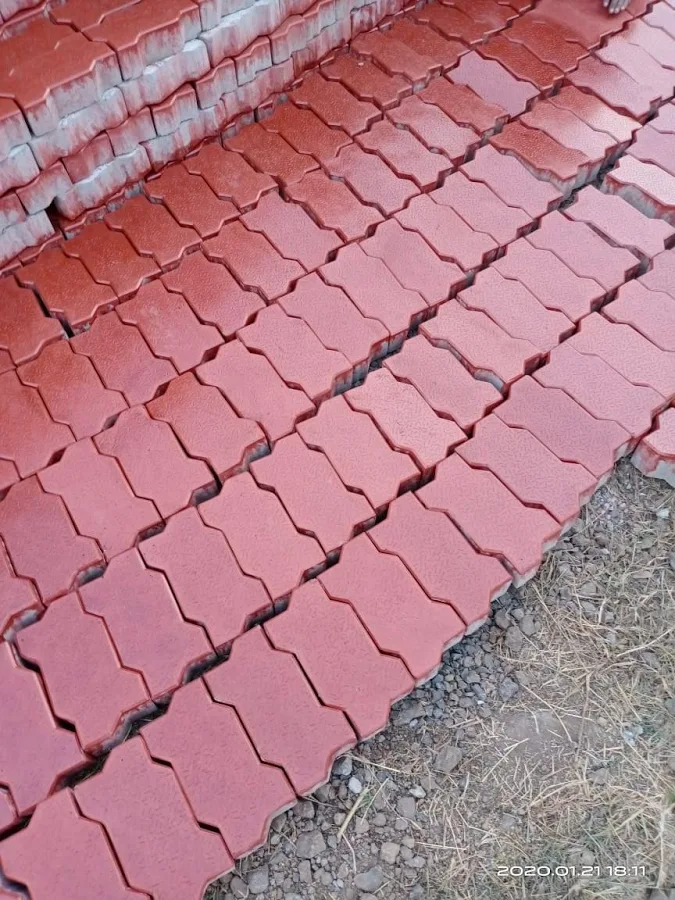

Pick up two pavers side by side. One has a shiny, glossy top that catches every light. The other looks calm and flat, with a soft, even surface and no glare at all. That second one is a matte paver, and it’s the finish people reach for when they want paving that looks quietly smart. Matte Finishing Pavers don’t shout. They sit in the background and make everything around them look better, and they keep doing it long after glossy surfaces start to show their age. If you’re planning a new driveway or courtyard, the finish is worth a few minutes of thought before you order.
A matte paver is a precast concrete block with a smooth, low-sheen top face. It suits driveways, pavements, courtyards, parking areas and building entrances, anywhere you want a clean, modern look without the glare of a shiny surface.
Pavers come in several finishes, and the finish decides how the surface looks and feels. A glossy surface reflects light. A rough one has visible texture. A matte surface sits between the two: smooth to the eye, but soft rather than shiny. Light spreads across it instead of bouncing off, so you see colour and pattern, not reflections. That’s why matte paving photographs well and looks calm in real life too.
Because it’s precast, each block is made to the same size and finish in a factory. Laid together, they form a flat, even surface that looks tidy from a distance and up close. Here’s what the term covers:
-
The block: A precast concrete paver, made to a consistent size so it lays neatly beside its neighbours.
-
The finish: A matte top face. Smooth, but with a low sheen rather than a gloss.
-
The look: Calm and even, with colour that reads as rich instead of reflective, even in strong midday sun.
-
The feel: Smooth underfoot, and easy for wheels, trolleys and prams to roll across. Nothing catches or snags.
-
Other finishes: Shot blast, rough and rubber mould pavers give different textures, so compare samples side by side before choosing.
Glossy paving looks impressive for a few weeks. Then the sun hits it at the wrong angle, a wet patch turns slick and every mark shows. A matte finish avoids most of that. If you’re weighing finishes up, these are the points that usually settle it:
-
No harsh glare: The surface doesn’t reflect sunlight into people’s eyes, which makes outdoor areas more comfortable, particularly in the afternoon when the sun is low.
-
A clean, modern look: Matte pairs well with contemporary buildings, offices and plain landscaping.
-
Shows less dust: Light dust and small scuffs are less obvious than on a glossy surface, so the paving looks cared for even between cleanings.
-
Smooth to walk and roll on: Easy for wheelchairs, strollers and trolleys.
-
Colour looks rich: Without the shine, colour appears deeper and more even, and a large area looks consistent.
-
Easy to lay: Pavers go down block by block, and any single piece can be lifted and replaced.
-
Low upkeep: No sealing or painting is needed. A broom and the occasional wash is enough.
Matte pavers work well wherever the surface is seen a lot and needs to stay tidy. Sun, rain and daily traffic all test a finish, so it helps to match it to the place. These are the usual spots:
-
Driveways: Home and commercial driveways that need a neat, understated surface. A matte finish keeps the house, not the paving, as the focus.
-
Pavements and walkways: Public paths where a calm, even finish suits the setting and people of every age can walk comfortably.
-
Courtyards and plazas: Open areas where glare would be uncomfortable at midday, and where people like to sit and talk.
-
Parking areas: Car parks that need to look clean even with daily use, with oil and tyre marks less obvious on the surface.
-
Building entrances: Approaches to offices, schools and apartment blocks, where first impressions count.
-
Gardens and patios: Paths and seating areas that blend with plants and furniture, so the greenery stays the star.
-
Commercial perimeters: The paved edge around shops, warehouses and business parks.
A few things set a matte paver apart from a glossy or rough one, and most of them come down to the top face:
-
Smooth, low-sheen face: A flat finish that reflects very little light, which is the defining feature of the type.
-
Even surface: The top is uniform, so the laid area looks continuous.
-
Precast consistency: Factory-made blocks keep their size and shape from one batch to the next.
-
Interlocking-friendly laying: Pavers fit together tightly to form a firm surface, with joints that can be filled with sand.
-
Concrete strength: Concrete pavers are made for foot and vehicle traffic outdoors, and they’re laid on a prepared base to carry the load.
-
Neutral appearance: The finish works with many colours and patterns, from plain borders to mixed layouts.
-
Made in India: Produced for local conditions and projects.
A paving surface should look good on day one and still look good years later. Choosing the right finish makes that far more likely, and it saves you from re-doing the work. Here’s what you gain:
-
Comfortable outdoor spaces: Less glare means people can sit, walk and work outside without squinting, even on a bright day.
-
A tidy, lasting appearance: The finish shows less dust and fewer light marks.
-
A modern, polished look: Matte surfaces make buildings and gardens feel up to date, and that can lift the whole property.
-
Easy repairs: A damaged block can be taken up and replaced without relaying the whole area.
-
Low upkeep: Sweep it, hose it down and move on. There’s no polishing and no resealing.
-
Flexible design: The finish works with many layouts, so you can lay straight lines, curves or borders.
-
Value for money: A tough surface that needs little care costs less over time, and you avoid repainting or resurfacing.
It’s a precast concrete paver with a smooth, low-sheen top face. It reflects very little light, so it looks calm and even instead of shiny.
A smooth surface can get slick when wet, so keep it clean and swept. If grip is a priority, such as on a ramp or slope, ask your supplier to compare a matte paver with a textured finish.
Driveways, pavements, courtyards, parking areas, building entrances, gardens and commercial perimeters all suit this finish. It works for homes and public spaces alike.
Short blast, rough and rubber mould finishes each add a different texture. Matte stays smooth and low-sheen, so ask for samples and compare them in daylight.
Share the area to be paved, the type of traffic and the look you want. Ask about the sizes, thicknesses and colours available, because these vary by product. A site photo and a rough area measurement will speed things up.